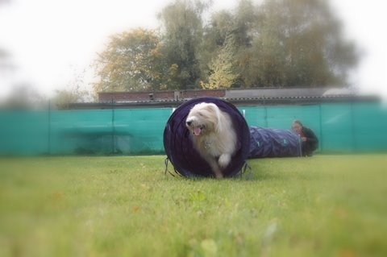
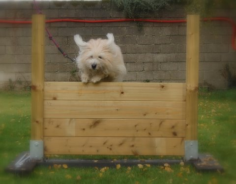
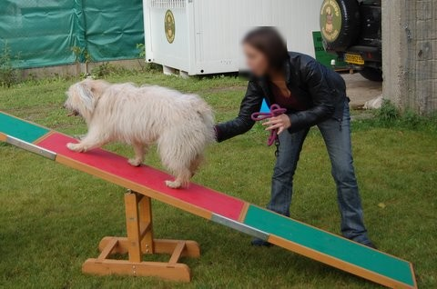
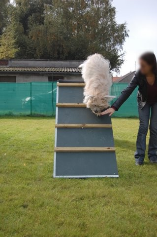

LE SPORT CANIN
- Des séances de sport canin, sur terrain spécialisé !
Idéal pour défouler, muscler, et amuser les chiens plein d’énergie, je vous propose de réaliser avec lui des séances de sport canin sur un terrain spécialisé et équipé.
Divers obstacles sont à votre disposition : balançoire, slalome, table haute, tunnel, sauts...
Pour vous garantir un travail efficace et éviter des attentes aux obstacles à franchir, quatre chiens par séance au maximum sont acceptés.
Les séances s’effectuent sur RDV :
* Du Mardi au Vendredi de 8h00 à 18h00
* Le Samedi de 8h00 à 17h00
N’hésitez pas à me contacter si vous souhaitez davantage d’informations.



